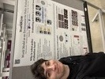
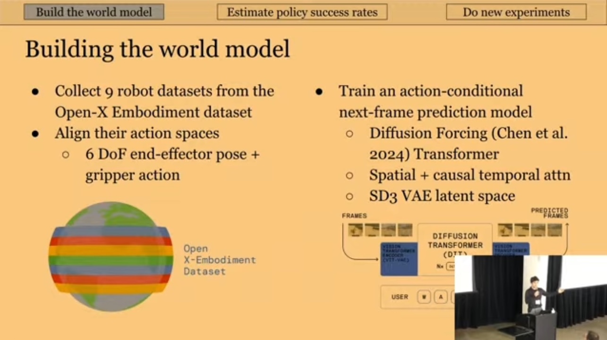

| February |
After dreaming of doing a PhD for the last 6 years, I was accepted to the PhD programs at Stanford, Berkeley, and MIT. I also gave my first ever academic talk at the World Modeling Workshop 2026.   |
| January | WorldGym, my first paper, was accepted to ICLR 2026! |
| February | excited to spend some time at world labs as a research intern working on world modeling! |
| October | i spent the past 8 months working on interactive video models, eventually leading to oasis. we released an open source version on github. i feel very excited about this direction! |
| August | wrapped up my internship at mosaicml, now part of databricks. this team is so talented and so nice! |